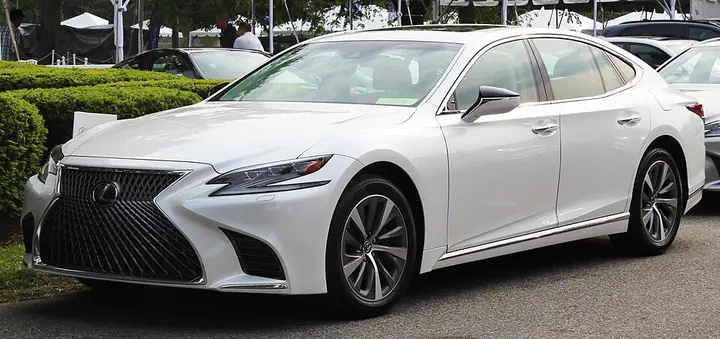
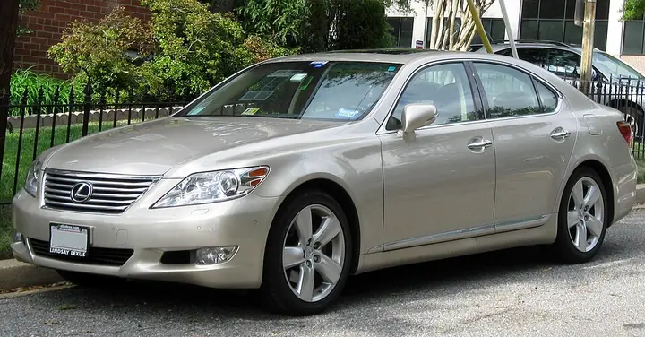
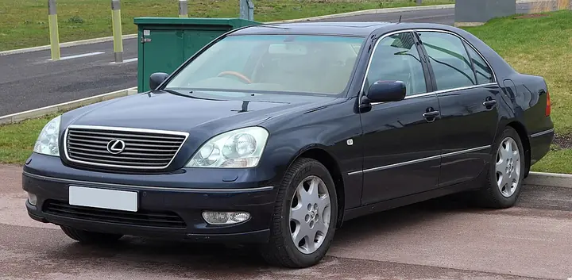
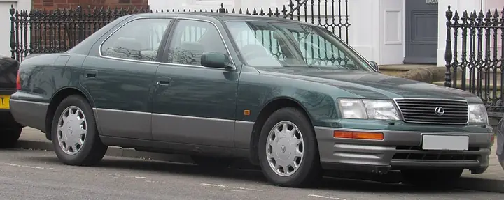
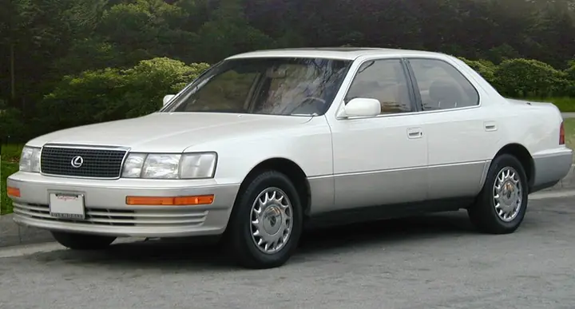

Lexus LS
Fifth generation (XF50; 2017) · 2017–present
Abstract
This generation of the Lexus LS was built December 2017 – present. Layout: Front-engine, rear-wheel-drive. Designed by 2013:, Yoshio Kanesugi (exterior), Yamamoto Rei (interior).


1Specifications
| Production | December 2017 – present |
|---|---|
| Model years | 2018–present |
| Designer | 2013:Yoshio Kanesugi (exterior)Yamamoto Rei (interior)Koichi Suga (chief designer) |
| Layout | Front-engine, rear-wheel-driveFront-engine, all-wheel-drive |
| Platform | TNGA: GA-L |
| Engine | Petrol:3444 cc V35A-FTS twin-turbo V6 (LS 500)3456 cc 2GR-FKS/8GR-FKS V6 (LS 350)Hybrid:3456 cc 8GR-FXS V6 (LS 500h) |
| Electric motor | 2x 132 kW 2NM AC Permanent Magnet synchronous motors |
| Transmission | 10-speed Aisin AWR10L65 "Direct Shift-10A" automatic (LS 350 & LS 500)10-speed Aisin AWRHM50 / L310/f "Multi Stage Electronically controlled Hybrid System" automatic (LS 500h) |
| Battery | 310.8V high-voltage Lithium-ion |
| Wheelbase | 3125 mm |
| Length | 5235 mm |
| Width | 1900 mm |
| Height | 1450–1460 mm |
| Weight | 2030–2350 kg |
| Related | Lexus LC |
2Previous generations








3Generation by generation
Length +5% from the first to the last
XF10 19894,996 mm
XF20 19944,996 mm
XF30 20005,010 mm
XF40 20065,029 mm
XF50 20175,235 mm
Weight +19% from the first to the last
XF10 19891,705 kg
XF20 19941,659 kg
XF30 20001,810 kg
XF40 20061,950 kg
XF50 20172,030 kg